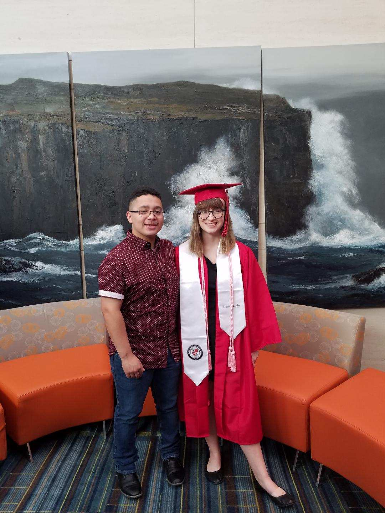

Kevin with his Girlfriend, photo was taken by girlfriend's mother
Personal background: I was born in Manassas,Virgina in 1999 and raised in Raleigh, North Carolina since 2007. I am the middle child in a 5 person El Salvadorian familia. I am also an uncle to a crazy nephew.
Professional: First "job" was doing concrete with my father and then my first legit job was working at a movie theater, also pool attendent, then salesperson at Sheetz and now Sales at IKEA.
Academic background: I graduated from Rolesville High School in 2018, Went to Wake Technical Community College and then transferred to UNC Charlotte to continue my learning into Computer Science.
Background in the subject matter of this course: I've been using computers since I was 7 though I didn't start heavily using it till middle school playing so many games like roblox and then League of Legends and now just have very high hopes for the future of Computer Science that I want to be a part of.
Primary Computer Platform: Windows 10 on Dell Inspiron 7000 gaming laptop. My first functional and not that much outdated besides NVIDIA 1050Ti.
Courses I'm taking and reason for each:
STAT2122 - Intro to Probability & Statistics - ONLY for the credit.
ITSC2600 - CS Program, Identity, Career - Learning more from professionals who speak personally to the students in this seminar and what to expect.
ITCS3160 - Database Design & Implementation - Another for credit and find it interesting to learn about how data bases.
ITIS3135 - Web Design & Development - Need the credit and find this very interesting and learning more about my path.
Funny story or interesting item about yourself to remember you by:
I flipped a table during a motorcycle presentation in Drivers Ed because the airhorn caught me off guard
I'd also like to share:
I hope to excel in the path of Computer Science.